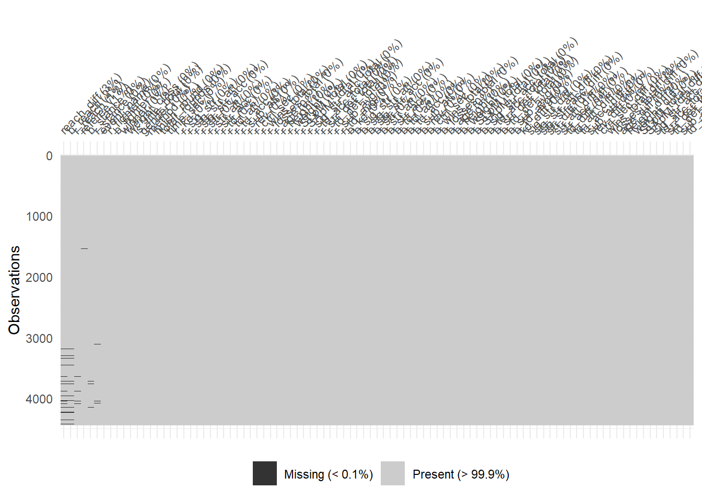
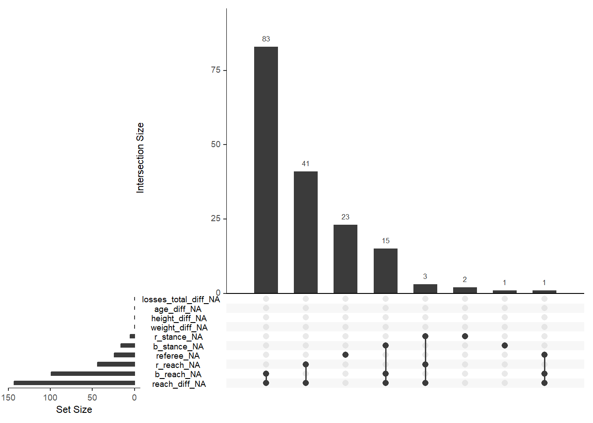
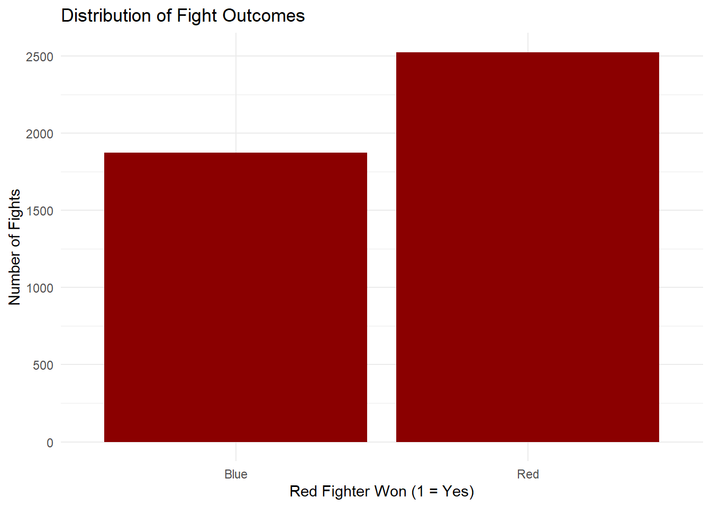
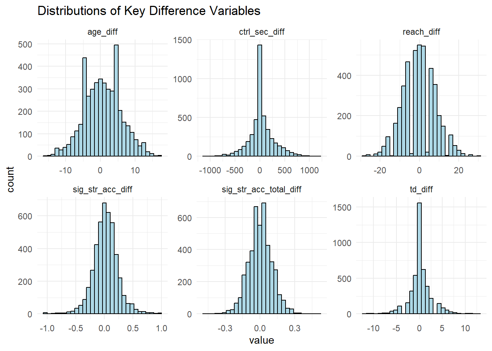
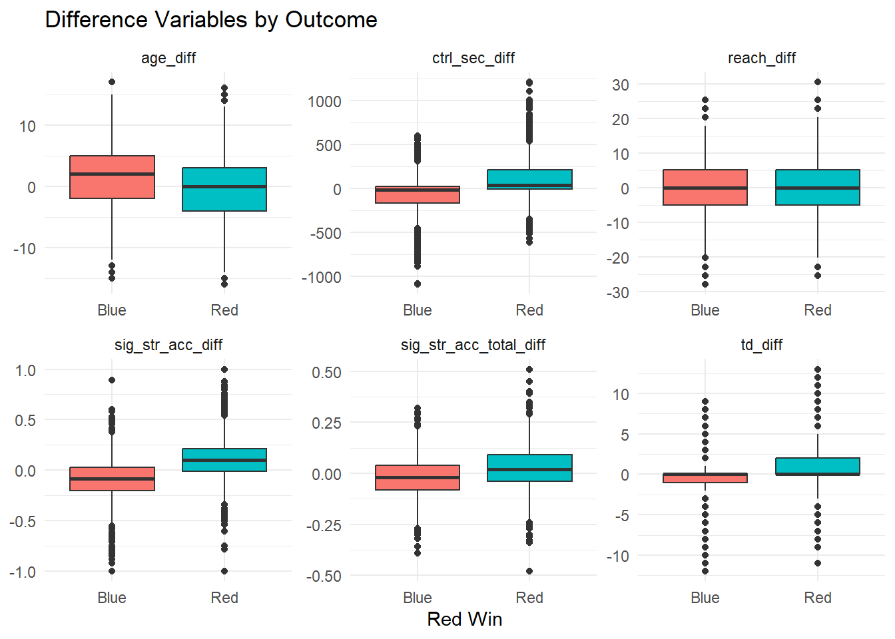
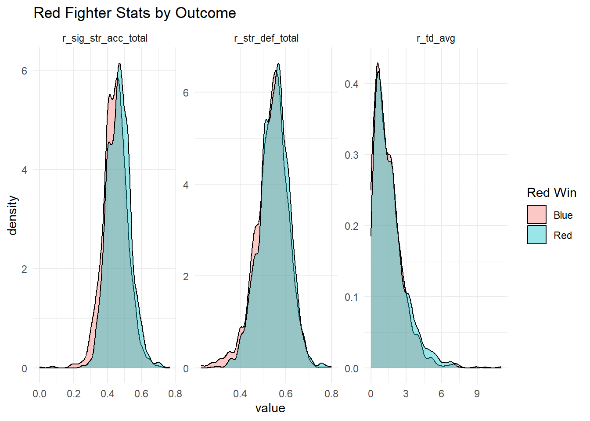
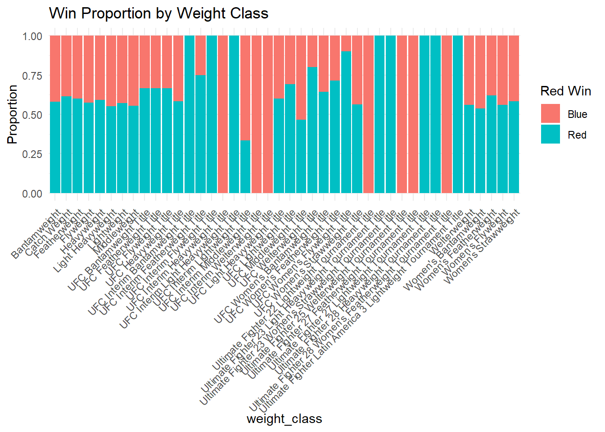
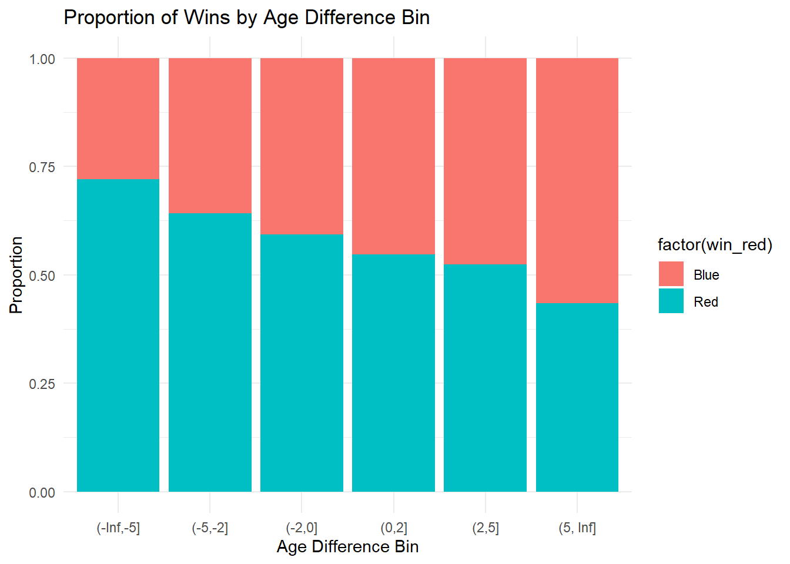
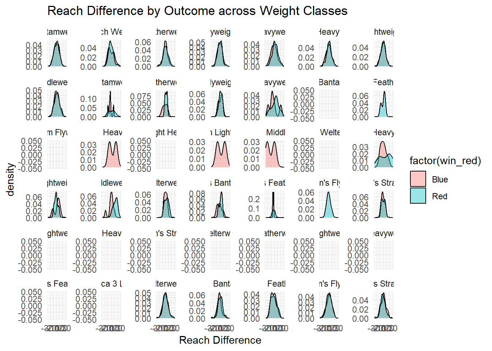
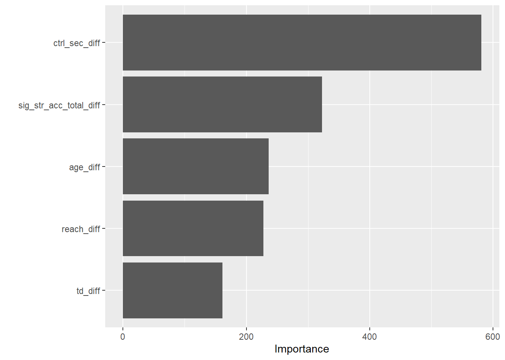

library(here)
library(readr)
library(dplyr)
library(ggplot2)
library(rsample)
library(naniar)
library(janitor)
library(recipes)
library(tidymodels) # for modeling pipeline (individual parts listed below)
library(yardstick)
library(parsnip)
library(workflows)
library(vip) Math 437 Project
UFC Data Dive
This page will contain my Math 437 final project.
Motivation and Context
I’ve always been into UFC — it’s something I grew up watching with my dad and brothers, and Saturday night fights became kind of a tradition in our house. The UFC (Ultimate Fighting Championship) is the largest professional organization in the world for mixed martial arts (MMA), where fighters compete using a combination of striking and grappling techniques from various combat sports like boxing, wrestling, Muay Thai, and Brazilian jiu-jitsu.
Over time, I started noticing how some matchups felt more “predictable” than others, not just based on who was more hyped or popular, but based on things like reach, stamina, or how good someone’s ground game was. That’s what made me wonder: is there a way to use actual stats to predict who’s more likely to win a fight?
This project is a chance for me to explore that idea through data. I’m using real UFC fight stats to see if we can predict winners based on measurable differences between fighters — like who has better striking accuracy, more fight experience, or stronger takedown defense. I think it’s cool to combine something I’ve always been interested about with the skills I’ve been learning.
Besides just being interesting to me, this kind of analysis could be useful for coaches, fighters, sports analysts, and even fans who love debating fight outcomes. Even betting markets or commentators might benefit from knowing what stats may matter when it comes to winning a fight; it overlaps with how sportsbooks and bettors think. Oddsmakers set betting lines based on a combination of stats, trends, and public perception and sharp bettors look for mismatches between the odds and what the data suggests. By building models that identify which stats actually matter, we might find undervalued fighters or better understand why certain odds are set the way they are. Even if we’re not trying to beat the bookies, it’s interesting to explore how predictive analytics aligns (or doesn’t) with betting markets.
That said, I also recognize that MMA is unpredictable. One well-timed punch, an unexpected submission, or even a bad judging decision can swing the outcome of a fight. No model can account for everything — and part of what makes UFC exciting is that there’s always a bit of chaos. But if we can better understand the patterns behind consistent wins and losses, I think we can at least shift the odds a little more in our favor.
My goal is to take all these raw stats and figure out what they’re really telling us about the chances of a fighter coming out on top.
Main Objective
The main goal of this project is to build a predictive model that can estimate the probability of a fighter winning a UFC match based on measurable stats. I’m focusing on using pre-fight data — like striking accuracy, takedown defense, fight history, and physical attributes — to see how well we can predict the outcome before the fight happens.
While the primary focus is on prediction, I also want to explore which factors are most important in influencing those predictions. For example, does having a longer reach actually help? Do knockdowns matter more than takedowns? Or is fight experience the biggest difference-maker? By building the model and looking at how different variables contribute to it, I hope to find out which stats are the most useful when it comes to winning a fight.
In the end, the goal isn’t to perfectly guess every winner — that’s not realistic in a sport with so much unpredictability. But if we can consistently identify what gives fighters the edge, we can start making more informed predictions, and maybe even better understand how UFC matchups play out.
Packages Used In This Analysis
| Package | Use |
|---|---|
| here | to easily load and save data |
| readr | to import the CSV file data |
| dplyr | to massage and summarize data |
| rsample | to split data into training and test sets |
| ggplot2 | to create nice-looking and informative graphs |
| naniar | to summarize and visualize missing data |
| janitor | to clean column names and spot duplicates/inconsistencies |
| recipes | to preprocess data (e.g., normalize, impute, encode) |
| parsnip | to define models (e.g., logistic regression, random forest) |
| workflows | to bundle modeling and preprocessing into one object |
| yardstick | to measure model performance (accuracy, AUC, etc.) |
| vip | to generate variable importance plots |
- Note: While many of these packages come from the tidyverse and tidymodels ecosystems, they’re listed individually to clarify their specific roles in the analysis, as recommended…
Data Description
ufc <- readr::read_csv(here::here("C:/Users/CSUFTitan/Documents/Math 437/Data/large_dataset.csv"))The dataset used in this analysis comes from Kaggle, where a user compiled UFC fight statistics by scraping data directly from UFCStats.com — the official statistics provider for the UFC, basically the official record book and data hub for everything UFC. The scraper was custom-built using Python and BeautifulSoup, and the full scraping code is publicly available on Kaggle, confirming that the data is pulled directly from the source. This is the kaggle dataset link: https://www.kaggle.com/datasets/maksbasher/ufc-complete-dataset-all-events-1996-2024/data and this is the link to their scraper: https://www.kaggle.com/code/maksbasher/large-dataset-scraper-all-fights
The dataset includes UFC fights ranging from 1996 to March 2024, based on all completed events listed on UFCStats at the time the scraper was run. This provides a wide historical view of UFC matchups and fighter performance over time. Also a note, the dataset only includes fights that have a definite winner - there are no fights within the dataset that have draws. In total, the dataset includes over 7,000 fights and 95 variables, capturing both fight-level and fighter-level information. Each row represents one fight, these include:
Fight-specific details like event name, weight class, method of victory, number of rounds, and time.
Fighter performance stats such as significant strikes, takedowns, submissions, and control time.
Fighter attributes including age, height, reach, stance, and overall win/loss records.
Calculated differences between the Red and Blue fighters for various stats (e.g., reach_diff, str_acc_diff). All fighter differences are calculated as “Red Corner - Blue Corner,” allowing for direct comparisons between the two opponents. These differences include metrics such as striking accuracy difference, takedown accuracy difference, and total wins/losses difference, allowing for easy side-by-side comparison; a positive value suggests the Red fighter has a longer reach, while a negative value indicates the Blue fighter has the advantage.
Note that measurements (height & reach) are by CM, weight is measured in KG and time is measured in seconds.
Data Limitations
While the UFC dataset provides a large and detailed collection of fight statistics, there are several limitations that should be considered when interpreting any results. First, the dataset spans fights from 1996 to 2024, but the UFC has evolved significantly during that time. Changes in judging criteria, rule enforcement, and even how certain statistics are recorded mean that older fights may not be directly comparable to more recent ones. This introduces potential bias if the entire dataset is modeled as if all fights occurred under the same conditions. For greater consistency, it may be better to focus on fights from a more recent era, such as post-2015, where rules and data collection may have became more standardized.
Another issue involves fighter attributes like age, height, and reach. These values appear to be assigned statically, meaning a fighter’s current or initial stats are applied to all their fights. For instance, a fighter listed as 34 years old may appear that way in fights that occurred ten years earlier. This is especially problematic for age, which is known to impact endurance and performance. Ideally, age should be calculated based on the fighter’s date of birth and the actual date of the fight.
In addition, the dataset lacks important qualitative information that often influences fight outcomes. Factors like injuries, short-notice fights, or last-minute weight cuts aren’t captured. This means a statistically superior fighter might lose due to context-specific issues that the model can’t see. Furthermore, many fights are decided by judges, and judging can be subjective or controversial. A fighter may statistically outperform their opponent but still lose a decision, which adds noise to the “winner” label used in prediction.
Finally, the dataset doesn’t account for career stages or fighter rankings. Fights between debuting athletes may look very different statistically from fights between top contenders, but the model treats all of them the same unless filtered by criteria like weight class or fight type. These limitations highlight the importance of interpreting model results carefully and being transparent about what the data can and cannot reveal.
Data Wrangling (Optional Section)
ufc_recent <- ufc |> slice_head(n = 4441)
# fights from 2015 onward, decided to focus on the "modern" era...rules up-to-date, less missing/incomplete data. also more "recent"#Missingness summary
#computes the percentage of missing values for each column in dataset
#summary shows the exact number of missing values (n_miss) and the percentage of missing values (pct_miss) for each variable/column.
ufc_recent |>
miss_var_summary()# A tibble: 95 × 3
variable n_miss pct_miss
<chr> <int> <num>
1 reach_diff 143 3.22
2 b_reach 99 2.23
3 r_reach 44 0.991
4 referee 24 0.540
5 b_stance 16 0.360
6 r_stance 5 0.113
7 event_name 0 0
8 r_fighter 0 0
9 b_fighter 0 0
10 winner 0 0
# ℹ 85 more rowsvis_miss(ufc_recent, sort_miss = TRUE)
gg_miss_upset(ufc_recent, nsets = 10)
ufc_recent <- ufc_recent |>
filter(!is.na(r_stance), !is.na(b_stance), !is.na(referee)) #drop rows with NA values - less than 1% missing data
# Start clean from the full imputed data
ufc_recent <- ufc_recent|>
filter(winner %in% c("Red", "Blue")) |>
mutate(
win_red = factor(ifelse(winner == "Red", 1, 0), levels = c(0, 1), labels = c("Blue", "Red")))
#Dropping categorical missings costs almost nothing and avoids weird “Unknown” patterns.#Impute r_reach and b_reach using KNN , data is 1-2% missing
impute_recipe <- recipe(win_red ~ ., data = ufc_recent) |>
update_role(event_name, r_fighter, b_fighter, winner, new_role = "id") |>
step_impute_knn(r_reach, b_reach)
prep_impute <- prep(impute_recipe)
ufc_imputed <- bake(prep_impute, new_data = NULL)
ufc_imputed <- ufc_imputed |>
mutate(reach_diff = r_reach - b_reach)# Make sure the outcome is a factor
ufc_imputed <- ufc_imputed |>
filter(winner %in% c("Red", "Blue")) |>
mutate(
win_red = factor(ifelse(winner == "Red", 1, 0), levels = c(0, 1), labels = c("Blue", "Red"))
)
# Set seed for reproducibility
set.seed(123)
n <- nrow(ufc_imputed)
train_indices <- sample(n, size = floor(0.8 * n))
# Split the dataset into training and test sets
train_data <- ufc_imputed[train_indices, ]
test_data <- ufc_imputed[-train_indices, ]After filtering for fights from 2015 onward, the dataset was found to be largely complete, with under 3.5% missingness in any individual variable. For the few variables with missing data, I used context-driven approaches. Numeric variables like r_reach and b_reach were imputed using k-nearest neighbors (KNN) to preserve the relationships between fighters’ physical stats. The reach_diff variable, which is derived from those columns, was recalculated post-imputation to ensure consistency. Low-missing categorical variables like stance and rows missing referee were dropped instead of encoding it as unknown to avoid introducing noise.
Also, since we are predicting the winner of a UFC fight based on fighter statistics, it is essential to split the data into a training and test set to ensure the model generalizes well to new fights. Without this split, the model could overfit, meaning it would perform well on past fights but struggle to predict future ones. By using an 80/20 split, where 80% of the data is used for training and 20% is reserved for testing, we can evaluate the model’s accuracy on unseen data and ensure it makes reliable predictions.
Exploratory Data Analysis
# Distribution of Fight Outcomes (Target Variable)
ufc_imputed |>
ggplot(aes(x = factor(win_red))) +
geom_bar(fill = "darkred") +
labs(x = "Red Fighter Won (1 = Yes)", y = "Number of Fights",
title = "Distribution of Fight Outcomes") +
theme_minimal()
# Univariate Distributions of Difference Variables
ufc_imputed |>
pivot_longer(cols = c(age_diff, reach_diff, td_diff, sig_str_acc_diff, ctrl_sec_diff, sig_str_acc_total_diff),
names_to = "variable", values_to = "value") |>
ggplot(aes(x = value)) +
geom_histogram(bins = 30, fill = "lightblue", color = "black") +
facet_wrap(~ variable, scales = "free") +
theme_minimal() +
labs(title = "Distributions of Key Difference Variables")
# Boxplots of Differences by Outcome
ufc_imputed |>
pivot_longer(cols = c(reach_diff, sig_str_acc_diff, td_diff, age_diff, ctrl_sec_diff, sig_str_acc_total_diff),
names_to = "variable", values_to = "value") |>
ggplot(aes(x = factor(win_red), y = value, fill = factor(win_red))) +
geom_boxplot() +
facet_wrap(~ variable, scales = "free") +
theme_minimal() +
labs(x = "Red Win", y = NULL, title = "Difference Variables by Outcome") +
guides(fill = "none")
# Raw Fighter Stats (Red Corner) by Outcome
ufc_imputed |>
pivot_longer(cols = c(r_sig_str_acc_total, r_td_avg, r_str_def_total),
names_to = "stat", values_to = "value") |>
ggplot(aes(x = value, fill = factor(win_red))) +
geom_density(alpha = 0.4) +
facet_wrap(~ stat, scales = "free") +
labs(title = "Red Fighter Stats by Outcome", fill = "Red Win") +
theme_minimal()
# Categorical Variable Analysis
ufc_imputed |>
ggplot(aes(x = weight_class, fill = factor(win_red))) +
geom_bar(position = "fill") +
labs(title = "Win Proportion by Weight Class", y = "Proportion", fill = "Red Win") +
theme_minimal() +
theme(axis.text.x = element_text(angle = 45, hjust = 1))
# Exploring Nonlinearities (Age Difference)
ufc_imputed |>
mutate(age_bin = cut(age_diff, breaks = c(-Inf, -5, -2, 0, 2, 5, Inf))) |>
ggplot(aes(x = age_bin, fill = factor(win_red))) +
geom_bar(position = "fill") +
labs(title = "Proportion of Wins by Age Difference Bin", x = "Age Difference Bin", y = "Proportion") +
theme_minimal()
#Interactions: Reach Difference and Weight Class
ufc_imputed |>
ggplot(aes(x = reach_diff, fill = factor(win_red))) +
geom_density(alpha = 0.4) +
facet_wrap(~ weight_class, scales = "free_y") +
labs(title = "Reach Difference by Outcome across Weight Classes", x = "Reach Difference") +
theme_minimal()Warning: Groups with fewer than two data points have been dropped.
Groups with fewer than two data points have been dropped.
Groups with fewer than two data points have been dropped.
Groups with fewer than two data points have been dropped.
Groups with fewer than two data points have been dropped.
Groups with fewer than two data points have been dropped.
Groups with fewer than two data points have been dropped.
Groups with fewer than two data points have been dropped.
Groups with fewer than two data points have been dropped.
Groups with fewer than two data points have been dropped.
Groups with fewer than two data points have been dropped.
Groups with fewer than two data points have been dropped.
Groups with fewer than two data points have been dropped.
Groups with fewer than two data points have been dropped.
Groups with fewer than two data points have been dropped.
Groups with fewer than two data points have been dropped.Warning in max(ids, na.rm = TRUE): no non-missing arguments to max; returning
-Inf
Warning in max(ids, na.rm = TRUE): no non-missing arguments to max; returning
-Inf
Warning in max(ids, na.rm = TRUE): no non-missing arguments to max; returning
-Inf
Warning in max(ids, na.rm = TRUE): no non-missing arguments to max; returning
-Inf
Warning in max(ids, na.rm = TRUE): no non-missing arguments to max; returning
-Inf
Warning in max(ids, na.rm = TRUE): no non-missing arguments to max; returning
-Inf
Warning in max(ids, na.rm = TRUE): no non-missing arguments to max; returning
-Inf
Warning in max(ids, na.rm = TRUE): no non-missing arguments to max; returning
-Inf
Warning in max(ids, na.rm = TRUE): no non-missing arguments to max; returning
-Inf
Warning in max(ids, na.rm = TRUE): no non-missing arguments to max; returning
-Inf
Warning in max(ids, na.rm = TRUE): no non-missing arguments to max; returning
-Inf
Warning in max(ids, na.rm = TRUE): no non-missing arguments to max; returning
-Inf
Warning in max(ids, na.rm = TRUE): no non-missing arguments to max; returning
-Inf
Warning in max(ids, na.rm = TRUE): no non-missing arguments to max; returning
-Inf
Warning in max(ids, na.rm = TRUE): no non-missing arguments to max; returning
-Inf
Warning in max(ids, na.rm = TRUE): no non-missing arguments to max; returning
-Inf
To begin exploring the dataset, I visualized the distribution of the target variable, win_red, which indicates whether the red corner fighter won the bout. The bar chart reveals that red fighters win more often than blue fighters in this dataset, with a modest class imbalance that should be noted when modeling.
Next, I examined the distributions of several key “difference” variables—such as age_diff, reach_diff, td_diff, ctrl_sec_diff, sig_str_acc_diff, and sig_str_acc_total_diff. These variables represent differences between red and blue fighters and are good candidates for predictive modeling, as they encode head-to-head advantages. Most of these variables were roughly symmetric and centered around zero, as expected from paired differences. However, some (like ctrl_sec_diff) showed skewness, and others like sig_str_acc_diff included extreme values such as -1, reflecting instances where one fighter landed no significant strikes. These values likely occur in very short fights or UFC debuts and may warrant further consideration or capping in modeling; some values approached +1 or -1, which raised red flags. After investigating further, I realized this variable was calculated using in-fight statistics — meaning it reflects what happened during the fight, not before. Including it in a predictive model would introduce data leakage since we wouldn’t know these values before the fight actually occurred. So when modeling I will use sig_str_acc_total_diff instead, which captures historical striking accuracy leading into the fight, and is more appropriate for predictive modeling.
To explore relationships with the outcome, I used boxplots to compare the same difference variables across win/loss outcomes. Variables such as ctrl_sec_diff and td_diff showed visible shifts depending on the winner, suggesting predictive potential. Meanwhile, differences like age_diff and reach_diff appeared more subtle and might interact with other factors like weight class or require non-linear treatment.
To dive deeper into those possibilities, I plotted red fighter statistics (e.g., r_sig_str_acc_total, r_str_def_total, and r_td_avg) by win outcome using density plots. While the distributions are fairly overlapping, red winners tended to have slightly higher values across all three metrics, especially in defensive and grappling stats.
Categorical variables like weight_class were also explored. A stacked bar chart showed that the likelihood of a red win varies across weight classes, with some divisions showing strong red-side trends. This suggests a potential arena for interaction effects or confounding from matchup dynamics.
Finally, I explored non-linear patterns by binning age_diff and plotting win proportions across bins. Older red fighters (especially 5+ years older than their opponent) appear to have lower win rates, hinting at diminishing returns with age. For interaction effects, I facet-plotted reach difference distributions by weight class, colored by win outcome. Some classes (e.g., Featherweight or Middleweight) showed clearer separation between winners and losers, indicating that the predictive value of reach may be more relevant in specific divisions.
Together, these plots helped identify promising predictors, revealed potential non-linear or interaction effects, and raised considerations for handling edge cases in modeling. The next steps will focus on refining the feature set and fitting appropriate predictive models.
Modeling
library(tidymodels)
# Set roles and select predictor variables
log_recipe <- recipe(win_red ~ age_diff + reach_diff + td_diff + ctrl_sec_diff + sig_str_acc_total_diff,
data = train_data) |>
step_normalize(all_numeric_predictors())
# Model specification
logistic_mod <- logistic_reg() |>
set_engine("glm") |>
set_mode("classification")
# Workflow
logistic_wf <- workflow() |>
add_recipe(log_recipe) |>
add_model(logistic_mod)
# Fit model
logistic_fit <- fit(logistic_wf, data = train_data)
# Predictions on test set
log_predictions <- predict(logistic_fit, new_data = test_data, type = "prob") |>
bind_cols(predict(logistic_fit, new_data = test_data)) |>
bind_cols(test_data |> select(win_red))
# Evaluate
log_predictions |> metrics(truth = win_red, estimate = .pred_class)# A tibble: 2 × 3
.metric .estimator .estimate
<chr> <chr> <dbl>
1 accuracy binary 0.689
2 kap binary 0.356# ROC AUC
log_predictions |> roc_auc(truth = win_red, .pred_Red)# A tibble: 1 × 3
.metric .estimator .estimate
<chr> <chr> <dbl>
1 roc_auc binary 0.237# Confusion matrix
log_predictions |> conf_mat(truth = win_red, estimate = .pred_class) Truth
Prediction Blue Red
Blue 217 105
Red 169 389# Random Forest model spec
rf_mod <- rand_forest(mtry = 3, trees = 500, min_n = 5) |>
set_engine("ranger", importance = "impurity") |>
set_mode("classification")
# Same preprocessing recipe as before
rf_recipe <- recipe(win_red ~ age_diff + reach_diff + td_diff + ctrl_sec_diff + sig_str_acc_total_diff,
data = train_data) |>
step_normalize(all_numeric_predictors())
# Workflow
rf_wf <- workflow() |>
add_recipe(rf_recipe) |>
add_model(rf_mod)
# Fit the random forest model
rf_fit <- fit(rf_wf, data = train_data)
# Predictions
rf_preds <- predict(rf_fit, new_data = test_data, type = "prob") |>
bind_cols(predict(rf_fit, new_data = test_data)) |>
bind_cols(test_data |> select(win_red))
# Accuracy, ROC AUC, etc.
rf_preds |> metrics(truth = win_red, estimate = .pred_class)# A tibble: 2 × 3
.metric .estimator .estimate
<chr> <chr> <dbl>
1 accuracy binary 0.668
2 kap binary 0.318rf_preds |> roc_auc(truth = win_red, .pred_Red)# A tibble: 1 × 3
.metric .estimator .estimate
<chr> <chr> <dbl>
1 roc_auc binary 0.262rf_preds |> conf_mat(truth = win_red, estimate = .pred_class) Truth
Prediction Blue Red
Blue 220 126
Red 166 368In this section, I built and evaluated two classification models to predict whether the Red corner fighter wins a given UFC fight, using fight-level differences in physical attributes and performance metrics. The models I chose are logistic regression and random forest—two commonly used methods for classification problems with different strengths.
Model 1: Logistic Regression Logistic regression is a linear model that estimates the probability of a binary outcome—in this case, whether the Red fighter wins (1) or not (0). It models the log-odds of the outcome as a linear combination of the predictors. This method is straightforward, interpretable, and serves as a strong baseline.
Model 2: Random Forest Random forest is an ensemble model that builds many decision trees and combines them by averaging (for regression) or voting (for classification). It’s good at capturing nonlinear relationships and interactions automatically. I used the ranger engine to fit the model efficiently with 500 trees, using 3 variables at each split (mtry = 3).
Both models used the same set of predictors, selected from earlier EDA: - age_diff - reach_diff - td_diff (takedown attempts difference) - ctrl_sec_diff (control time difference) - sig_str_acc_total_diff (significant strike accuracy difference over career)
All numeric predictors were normalized using step_normalize() in a recipe() to ensure fair scaling, especially for logistic regression.
After fitting each model, I predicted outcomes on the test set and evaluated the models using three standard classification metrics: accuracy, ROC AUC, and the confusion matrix. Accuracy measures the overall percentage of correct predictions. ROC AUC (Area Under the Receiver Operating Characteristic Curve) evaluates how well the model separates positive from negative cases, regardless of the chosen cutoff. Confusion Matrix breaks down the performance into True Positives (TP), True Negatives (TN), False Positives (FP), and False Negatives (FN), which helps understand what kind of mistakes the model makes.
Both models performed similarly, with logistic regression having a slight edge in raw accuracy and the random forest showing slightly more discrimination (AUC). However, both models struggled to confidently separate winners from losers based on the variables provided. Future improvements could involve feature engineering (e.g., removing in-fight variables like ctrl_sec_diff to avoid data leakage), including historical performance trends, and possibly tuning or ensembling models. ## Insights
rf_fit %>%
extract_fit_parsnip() %>%
vip::vip(num_features = 10)
The primary finding from this project is that while some fighter-level differences (such as reach and age) show moderate patterns with fight outcomes, they alone are not strong predictors of who wins a UFC fight. My models logistic regression and random forest — achieved around 67–69% accuracy, which is slightly better than guessing but not strong enough for high-stakes prediction or decision-making.
One of the clearest patterns observed during exploratory analysis was that fighters with longer reach and better historical strike accuracy were slightly more likely to win, especially in certain weight classes. This was visualized through boxplots and density plots where red fighters had higher values in reach_diff and sig_str_acc_total_diff more often when they won.
However, the models’ low ROC AUC scores (around 0.24–0.26) suggest that the predictive signal from these variables is weak when applied to new data. This implies that either (1) the features used do not capture the full complexity of UFC outcomes, or (2) there may be a lot of randomness or hidden contextual factors (like strategy, corner advice, injuries, or judging biases) that aren’t captured in the stats alone. Also when it came to random forest tree, the difference that came out important was the control variable; this suggests that winning a fight may be more closely tied to a fighter’s ability to control their opponent.
Despite the weak prediction performance, this project shows that modeling fight outcomes is feasible with public stats, and that certain differences (like control time, takedowns, and reach) do relate to success — just not strongly enough in isolation to make reliable predictions.